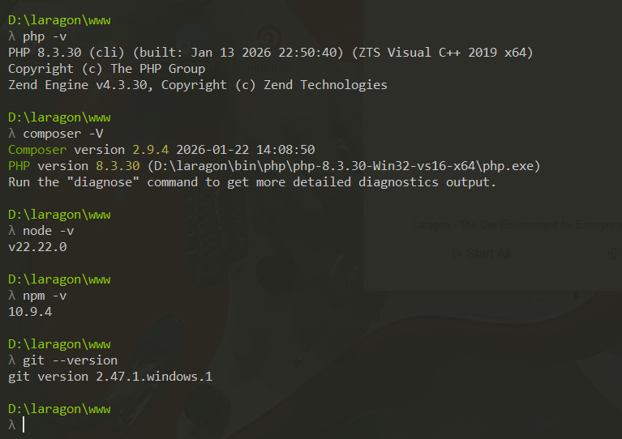
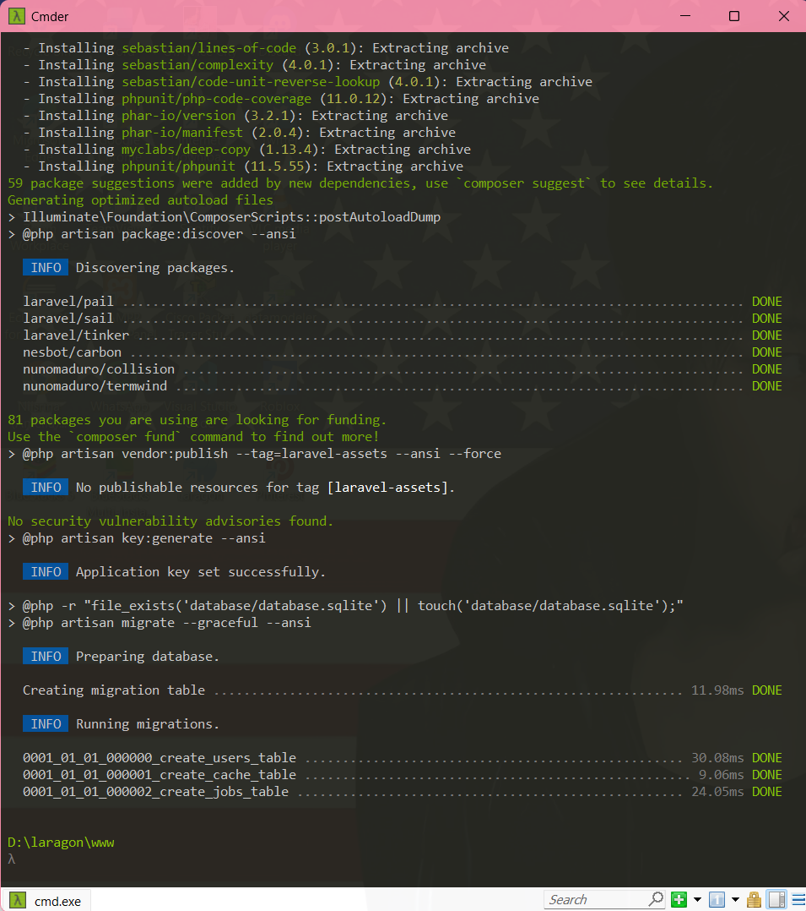
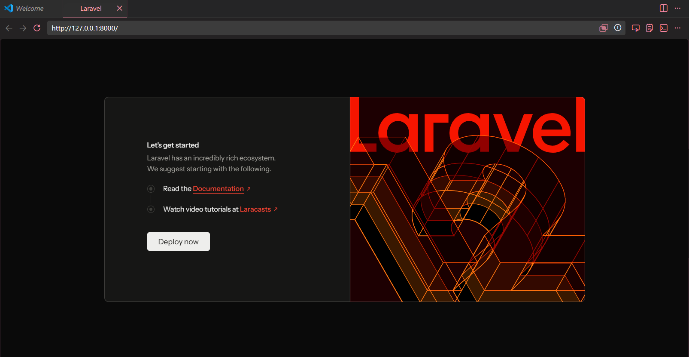
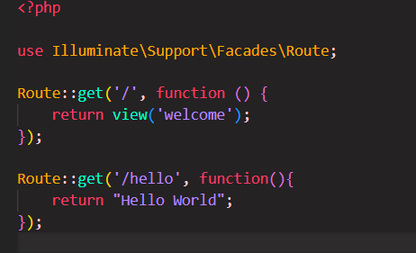
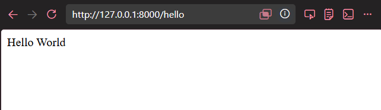
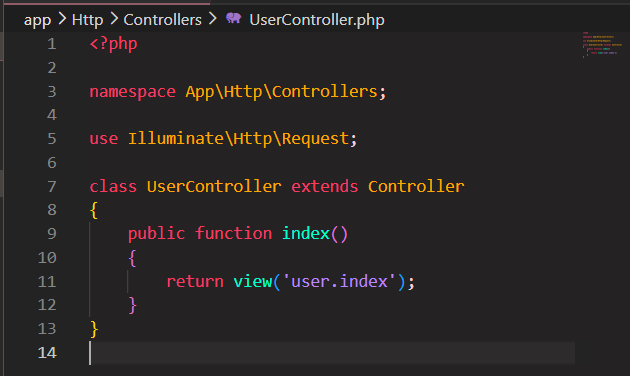
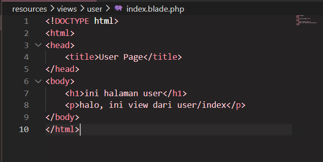
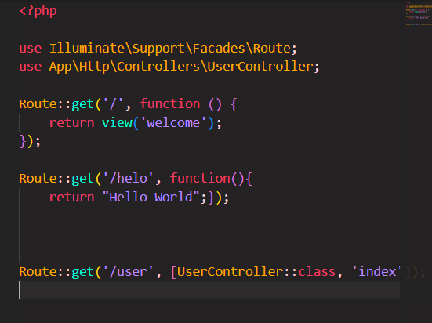
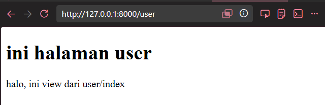

A. Pendahuluan
Laravel adalah salah satu framework PHP yang populer dan digunakan untuk mempermudah proses pengembangan aplikasi berbasis web. Framework ini menyediakan berbagai fitur seperti routing yang membantu pengembang dalam membangun aplikasi secara lebih terstruktur, efisien, dan aman.
Pada praktikum ini, dilakukan proses konfigurasi awal Laravel sebagai langkah awal dalam pengembangan website lebih lanjut. Konfigurasi ini meliputi instalasi Laravel, pembuatan project pada direktori lokal, dan menjalankan server lokal.
B. Tujuan
- Mampu melakukan instalasi Laravel
- Mampu membuat project baru Laravel
- Mampu memahami struktur dasar framework Laravel
- Mampu memahami konsep MVC (Model-View-Controller)
C. Alat dan Tools yang Digunakan
- Laptop
- VS Code
- Laragon
- Composer, Git, Node JS, dan NPM
- GitHub
D. Langkah Kerja
Pada langkah pengerjaan, dilakukan proses persiapan dan konfigurasi awal Laravel.
- Requirement Tools
Dilakukan pengecekan versi php, Git, Node JS, NPM, dan Composer. Hal ini perlu dilakukan untuk memastikan bahwa tools sudah sesuai dengan requirement.

- Membuat Project Laravel
Setelah melakukan pengecekan, buat project Laravel menggunakan perintah
composer create-project laravel/laravel=^12 PWEB24 --prefer-distlalu klik enter.Setelah project berhasil dibuat, akan muncul tampilan seperti berikut ini.

- Masuk ke Folder Project
Setelah project berhasil dibuat, buka folder project yang telah dibuat sebelumnya pada aplikasi VS Code.
- Running Project Laravel
Jalankan server lokal dengan mengetik perintah
php artisan serve. Jika perintah berhasil, akan muncul alamat server lokal Laravel yaitu http://127.0.0.1:8000. Tampilan laman awal akan terlihat seperti berikut.
- Test Routing
Buka file web.php pada folder routes, lalu tambahkan kode routing seperti berikut.

Pada alamat server lokal Laravel, tambahkan /helo kemudian run. Jika routing berhasil, maka akan muncul
tampilan seperti berikut.

E. Tugas
- Buat controller dengan nama
UserController.Pada terminal, ketik perintah
php artisan make:controller UserController. Jika berhasil, maka file akan muncul di pathapp/Http/Controllers/UserController.php. - Buat function dengan nama
index.Buka file
UserController.phplalu buat function seperti berikut ini.
- Buat view di dalam folder resources/views dengan nama
index.Buka folder
resources/viewskemudian buat folder baru dengan namauser. Di dalam folder, buat file dengan namaindex.blade.php. Isi dengan HTML sederhana seperti berikut.
- Buat routing/user untuk menampilkan view
Buka file
routes/web.php. Tambahkan kode berikut pada file tersebut.
- Jalankan project
Buka http://127.0.0.1:8000/user. Jika berhasil, akan muncul tampilan seperti berikut.

F. Kesimpulan
Dari praktikum ini, telah dilakukan proses instalasi, konfigurasi environment, serta pembuatan project pada localhost. Selain itu, praktikum ini juga memberikan pemahaman mengenai struktur dasar Laravel dan penerapan konsep MVC melalui proses routing, controller, dan view dalam pengembangan aplikasi web.